Open-Shell メニュー
Open-Shell メニュー
は、Windows 2000、XP、Windows 7 のメニュー動作を模倣できる柔軟なスタートメニューです。さまざまな高度な機能があります：
- 「クラシック」スタイルと「Windows 7」スタイルから選択できます
- ドラッグアンドドロップでアプリケーションを整理できます
- お気に入りを表示する、コントロールパネルを展開するなどのオプションがあります
- 最近使用したドキュメントを表示します。表示するドキュメントの数はカスタマイズ可能です
- アラビア語とヘブライ語の右から左への表示サポートを含む、35 の言語に翻訳されています
- Windows の元のスタートメニューを無効にしません。スタートボタンを Shift+クリックすることでアクセスできます
- メニュー内の項目を右クリックして、削除、名前の変更、並べ替え、その他の操作を実行できます
- 検索ボックスは、キーボードショートカットの邪魔をすることなく、プログラムやファイルを見つけるのに役立ちます
- 最近のドキュメントや一般的なタスクに簡単にアクセスするためのジャンプリストをサポートします
- 32 ビットおよび 64 ビットのオペレーティングシステムで利用できます
- スキンをサポートし、追加のサードパーティ製スキンも利用できます。自作もできます！
- 外観と機能の両方を完全にカスタマイズできます
- Microsoft の Active Accessibility をサポートします
- Windows メニューの「すべてのプログラム」ボタンをカスケードメニューに変換します
- カスタマイズ可能なスタートボタンを実装します
- Windows ストアアプリを表示、検索、起動できます（Windows 8 以降）
- そして最後になりましたが 無料です！
スタイル
スタートメニューには 3 つのスタイルから選択できます。
1) 1 列クラシックスタイル
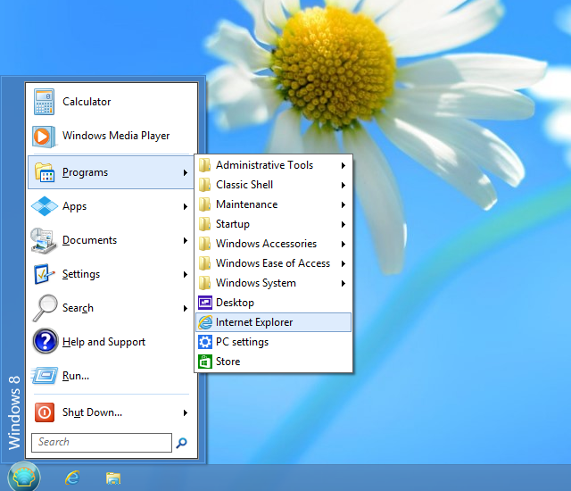
このスタイルは Windows 2000 にあるメニューに似ています。メインメニューに 1 列があり、側面に縦書きのテキストがあります。項目の順序、アイコン、テキストをカスタマイズできます。
プログラム、ジャンプリスト、検索結果はカスケードサブメニューとして表示されます。
2) 2 列クラシックスタイル
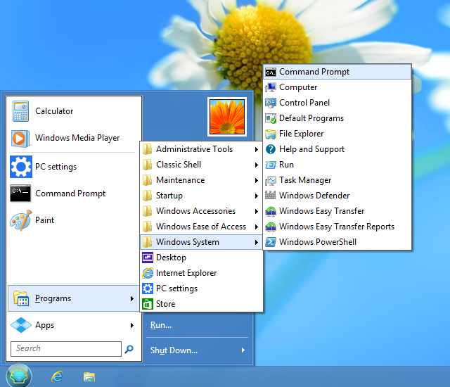
このスタイルは Windows XP のメニューに似ています。メニュー項目を配置できる 2 つの列があります。順序、アイコン、テキストをカスタマイズできます。
プログラム、ジャンプリスト、検索結果はカスケードサブメニューとして表示されます。
3) Windows 7 スタイル
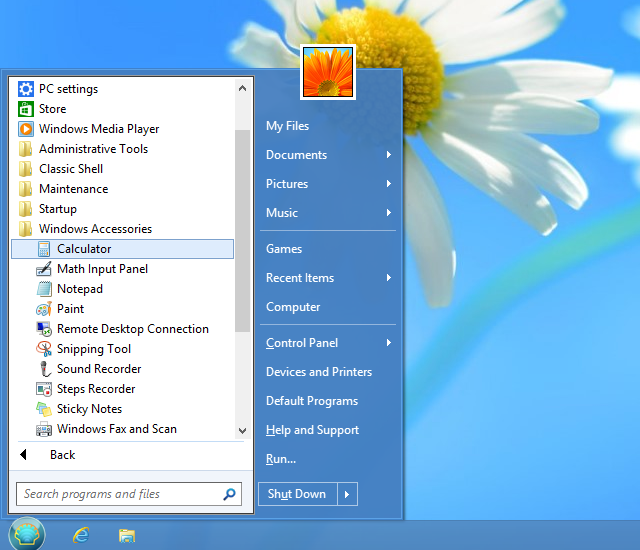
このスタイルは Windows Vista と Windows 7 のメニューに似ています。第 1 列の項目は、ピン留めされたプログラムと最近使用したプログラム、すべてのプログラムの一覧、検索ボックスとして事前定義されています。第 2 列の項目は完全にカスタマイズ可能です。
ジャンプリストと検索結果はメインメニュー内に表示されます。プログラムはメインメニュー内に表示することも、カスケードサブメニューとして開くこともできます。
このスタイルはクラシックスタイルよりもカスタマイズ性は低くなりますが、Windows 7 に慣れた人にはより馴染みのある外観と操作感を提供します。
操作
古いバージョンの Windows でスタートメニューを使用したことがあるなら、すぐに馴染めるでしょう：
Windows キーを押すか、画面隅のオーブをクリックしてスタートメニューを開きます。
オーブをクリックするときに Shift キーを押し続けると、オペレーティングシステム自身のスタートメニューにアクセスできます。
項目をクリックして実行します。
プログラムをドラッグして、メニュー内のプログラムの順序を変更したり、別のフォルダーに移動したりできます。
項目を右クリックして、名前の変更、削除、その他の操作を実行できます。
オーブを右クリックして、スタートメニューの設定を編集したり、このヘルプファイルを表示したり、スタートメニュープロセスを停止したりできます。
設定
スタートボタンを右クリックして設定にアクセスします：
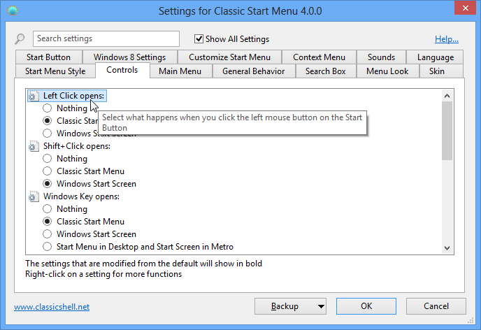
基本設定のみを表示するか、利用可能なすべての設定を表示するかを選択できます。各設定にマウスを合わせると、その目的の説明が表示されます。検索ボックスに入力して、名前で設定を検索できます。
すべての設定には既定値があります。既定値は固定の場合もあれば、現在のシステム設定に依存する場合もあります。一度設定を編集すると「変更済み」となり、太字で表示されます。既定値に戻すには、設定を右クリックします。
設定を XML ファイルに保存し、後で読み込み直すことができます。これらの機能にアクセスするにはバックアップボタンを押します。そこからすべての設定を既定値にリセットすることもできます。
ほとんどの設定は編集するとすぐに変更されます。たとえば、スタートメニューを編集し、設定ダイアログが開いている間にスタートメニューにアクセスして変更を確認できます。少数の設定は、変更を確認するためにスタートメニューを終了する必要があります。
注意： すべての設定ウィンドウはサイズ変更可能です。サイズを変更し、好きな場所に配置してください。新しい位置を記憶します。
スタートメニューのカスタマイズ タブをクリックしてメニュー項目をカスタマイズします。スタイルに応じて異なる UI が表示されます。
クラシックスタイルでは、スタートメニューの両方の列をカスタマイズし、サブメニューを作成できます。左側の列にはメニューの現在の項目が表示され、右側の列には利用可能なメニュー項目が表示されます。右から左へドラッグしてメニューに項目を追加します。
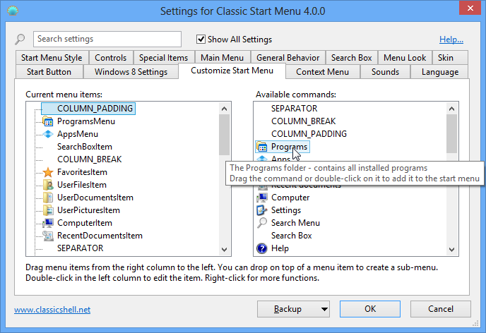
Windows 7 スタイルでは、第 2 列の項目のみを編集でき、サブメニューはありません。
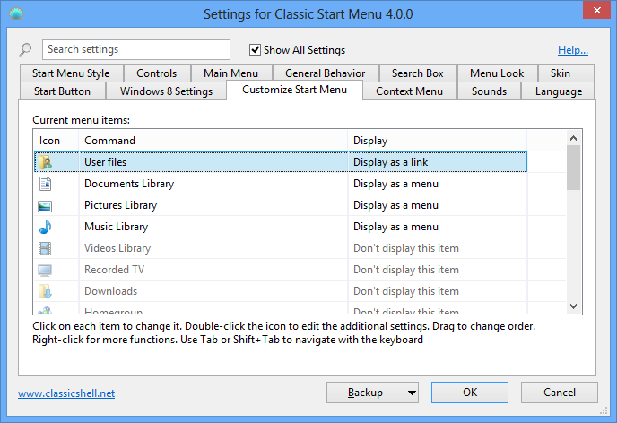
アイコンをダブルクリックして項目のプロパティを編集します：
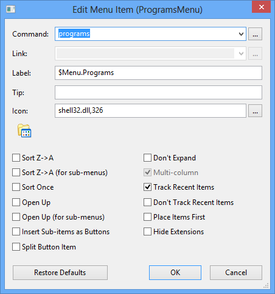
ここで項目のコマンド、テキスト、アイコン、その他の属性を選択できます。選択したコマンドの既定のテキストとアイコンを取得するには 既定値に戻す ボタンを押します。
コマンドは次のいずれかです：
- 定義済みコマンドのいずれか - ドロップダウンから選択
- カスタム実行可能文字列
- プログラム名とその引数、あるいは URL（http://www.google.com など）でもかまいません。%SystemRoot% のような環境変数がサポートされています
- 空白のまま - この場合、link 属性が使用されていれば、それがコマンドとして機能します
リンクには、ファイルまたはフォルダーへのパスを指定できます。ファイルの場合、そのファイルが実行されます。フォルダーの場合、そのフォルダーがサブメニューとして開かれます。一部のメニュー項目（Programs や Favorites など）には暗黙の link 属性があるため、それらの Link ボックスは無効になります。
アイコンは次のいずれかです：
- 空白のまま - この場合、link 属性がファイルまたはフォルダーを指していれば、そのファイルまたはフォルダーのアイコンが使用されます
- リソースファイル,アイコン ID - たとえば %windir%\notepad.exe,2。ファイル名とコンマの間にスペースを入れないでください。アイコンのインデックスではなく、アイコンのリソース ID を使用していることを確認してください。 最良の結果を得るには、アイコンボックスの隣にある [...] ボタンを使用してください
- ,アイコン ID - 上記と同じですが、リソースファイルは StartMenuDLL.dll 自体です。これはスタートメニュー自身のアイコンを参照するときに便利です
- アイコンファイル - たとえば C:\Program Files\Mozilla Thunderbird\Email.ico
- none - 空白のアイコンを使用します
label 属性または tip 属性が $（ドル記号）で始まる場合、システムはそれを StartMenuL10N.ini
ファイル内の文字列名として扱います。実際のテキストは現在の言語設定に依存します。これは複数の言語で使用できるメニューを作成するときに便利です。
「サブ項目をボタンとして挿入する」をチェックすると、メニュー項目自体を表示する代わりに、スタートメニューはサブ項目をボタンの行として表示します。既定ではボタンは中央揃えです。最後の項目として区切り線を追加すると左揃えに、最初の項目として区切り線を追加すると右揃えにできます。1 つの用途として、シャットダウンメニュー項目をシャットダウン、再起動、ログオフなどの個別のボタンに置き換えることができます。
管理者設定
設定は
ユーザーごとで、レジストリに保存されます。既定ではすべてのユーザーが
自分のすべての設定を編集できます。管理者は特定の設定をロックして、
どのユーザーも編集できないようにできます：
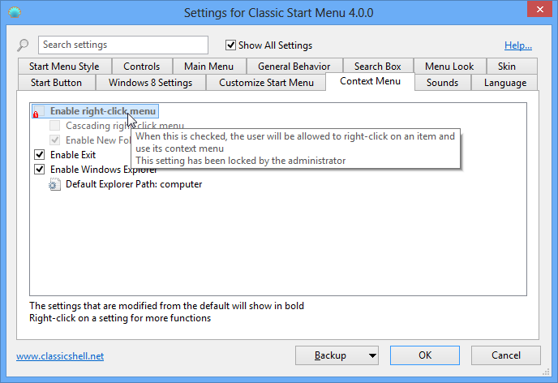
この例では、「右クリックメニューを有効にする」設定が常に
チェックなしになるようにロックされており、どのユーザーも変更できません。これは
設定を HKEY_LOCAL_MACHINE\SOFTWARE\OpenShell\StartMenu レジストリキーに追加することで実現されます。「EnableContextMenu」という名前の DWORD 値を作成し、0 に設定します。
場合によっては、すべてのユーザーに対して値をロックするのではなく、
設定の初期値を変更したいだけのこともあります。そのような場合は、値の名前に
「_Default」を追加します。たとえば、コンテキストメニューを既定で無効にしつつ、ユーザーが望めば有効にできるようにしたい場合は、「EnableContextMenu_Default」という名前の DWORD 値を作成し、
0 に設定します。
設定のレジストリ名とその値を知る最も簡単な方法は、それを変更してから
HKEY_CURRENT_USER\Software\OpenShell\StartMenu\Settings で調べることです。
設定を既定値にロックしたいが、
既定値が何か分からない場合があります。その場合は DWORD 値を作成し、
0xDEFA に設定します。
グローバル設定「EnableSettings」もあります。レジストリで 0 に設定すると、
ユーザーが設定ダイアログを開くことさえできなくなります：
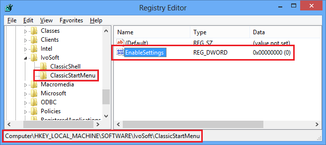
スタートメニューは、管理者によって設定されたほとんどのグループポリシーも確認します。gpedit.msc を実行し、ユーザーの構成 -> 管理用テンプレート -> スタートメニューとタスクバー に移動します。そこから、実行、シャットダウン、ヘルプ、その他の機能を無効にできます。（Windows の Home エディションでは利用できません）。
グループポリシーによる設定の編集もサポートされています。インストールフォルダーにある PolicyDefinitions.zip ファイルを展開し、詳細についてはドキュメント PolicyDefinitions.rtf を読んでください。
スキン
多数のプリインストールされたスキンから選択できます：
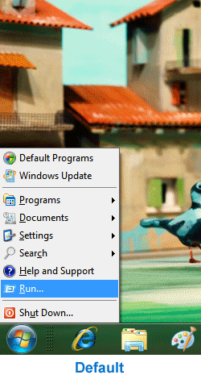
または、追加のサードパーティ製スキン（メイン Web サイトや他の場所から）をダウンロードしてインストールできます。新しいスキンをダウンロードした後、
.skin ファイルを Skins ディレクトリ 通常は C:\Program
Files\Open-Shell\Skins にコピーする必要があります。その後、設定で利用可能になります。
Windows 7 の注意： 一部のスキンは、クラシック、Basic、または Aero モード専用に設計されている場合があります。たとえば Aero スキンはグラスサポートを必要とし、クラシックまたは Basic テーマが選択されていると見苦しくなります。一部の Aero スキンは、特定のグラス色が選択されている必要もあります。
独自のスキンを作成できます。アルファチャンネルをサポートする画像エディター（Gimp や Photoshop など）と、リソースファイルを編集するツール（Resource Hacker や Visual Studio など）が必要です。そしてもちろん、グラフィカルデザインの才能も少し必要です :)。始める前に スキン作成チュートリアル を読んでください。
検索
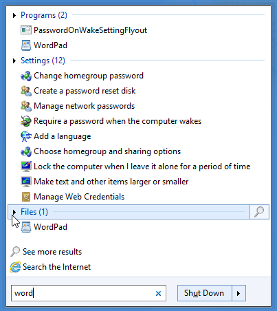
検索ボックスでは、スタートメニューの内容、PATH 環境変数内のプログラム、およびインデックスされたファイルを検索できます。検索ボックスを
通常のメニュー項目として表示させ、上下の矢印キーでそこに移動できます。スタートメニューを開いたときに検索ボックスを
既定で選択するように選択できます。または、Tab キーでのみ検索ボックスをアクティブにするように選択することもでき、Tab を押すまでは検索ボックスがないかのようにキーボードでナビゲートできます。
検索結果は、Windows 7 スタイルを使用している場合はメインメニューに、クラシックスタイルの場合はサブメニューに表示されます。
各カテゴリをクリックして展開し、より多くの結果を表示します。最後のアイコンをクリックすると、Explorer ですべての結果を表示します。
クラシックスタイルでは、追加の「検索プロバイダー」を登録でき、検索ボックスのテキストを検索するために使用できます。検索プログラムは、
メニューから選択するか、
Alt+キーを押すことで実行します。この例では Agent Ransack に Alt+A を使用します。
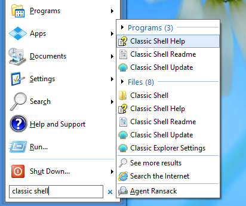
これは、スタートメニューのカスタマイズ タブで SearchBoxItem のサブ項目を追加することで行います：
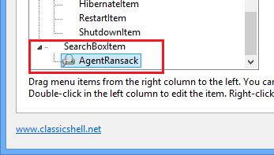
各サブ項目を開き、検索プログラムを起動するコマンドを入力します。コマンドで %1 を使用すると、検索ボックスの内容に置き換えられます。%2
を使用すると、URL 形式でエンコードされた検索テキストに置き換えられます。メニューエントリを完成させるために、ラベル、ヒント、アイコンを入力します。ラベルテキストでは、
アクセラレータ文字をマークするために & を使用できます（たとえば &Agent Ransack）。
いくつかの可能なコマンドを次に示します：
Agent Ransack で検索："C:\Program Files\Agent Ransack\AgentRansack.exe" -r -f "%1"
Everything で検索："C:\Program Files\Everything\Everything.exe" -search "%1"
Google で検索：http://www.google.com/#q=%2
Bing で検索：http://www.bing.com/search?q=%2
カスタムスタートボタン
Open-Shell はタスクバーに独自のスタートボタンを追加できます。Windows 7 の既定のスタートボタンを置き換えることさえできます。Aero スタイルのオーブ、長方形のクラシックボタンから選択するか、
独自に作成できます。カスタムスタートボタンには、ボタンの 3 つの状態 通常、ホット、押された状態 を含む画像が必要です：
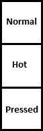
画像は 32 ビットの PNG または BMP でなければなりません。既定では、画像の幅がボタンのサイズを決定します。カスタム幅を入力することで上書きできます。
カスタムボタンの作成の詳細については、ボタンチュートリアル を読んでください。
多くのカスタムスタートボタン画像がオンラインで見つかります。いくつかの例を次に示します：
http://www.classicshell.net/forum/viewforum.php?f=18
http://www.sevenforums.com/themes-styles/34951-custom-start-menu-button-collection.html
http://www.sevenforums.com/customization/78291-big-group-custom-start-orbs.html
http://tutoriales13.deviantart.com/art/Orbs-153450418
ローカライズ
ユーザーインターフェイス（設定ダイアログボックスを除く）は 35
の言語にローカライズされています。
設定ダイアログボックスは、より少ない数の言語に翻訳されています。既定のインストールには英語のみが含まれます。より多くの言語は 翻訳ページ からダウンロードできます。Open-Shell の正確なバージョン用の翻訳パッケージをダウンロードするようにしてください。
コマンドライン
StartMenu.exe は 5 つのコマンドラインパラメーターをサポートしています：-open、-toggle、-togglenew、-exit 、-settings。
最初の 2 つは名前が示すとおりの動作をします。1 つはクラシックスタートメニューを開き、もう 1 つはそれを切り替えます。これらのパラメーターを使用して、
スタートメニューを開くショートカットをクイック起動バーに作成できます。または、
WinKey などのプログラムでホットキーを設定できます。
3 番目の「-togglenew」は、既定の Windows スタートメニュー（またはスタート画面）を切り替えます。
既定のメニューを開くショートカットやホットキーを作成し、Win
キーをクラシックメニューに使用したい場合に便利です。
「-exit」を使用してスタートメニューを終了します。このコマンドは、スタートメニューが現在ビジーでない場合にのみ機能します。
「-settings」を使用してスタートメニュー設定を開きます。これは設定を編集するためのショートカットを作成するのに便利です。
アクセシビリティ
スタートメニューは、JAWS や Microsoft のナレーターなどのスクリーンリーダーをサポートしています。アクセシビリティサポートが問題を引き起こす場合は、設定の 一般的な動作 タブから無効にできます。